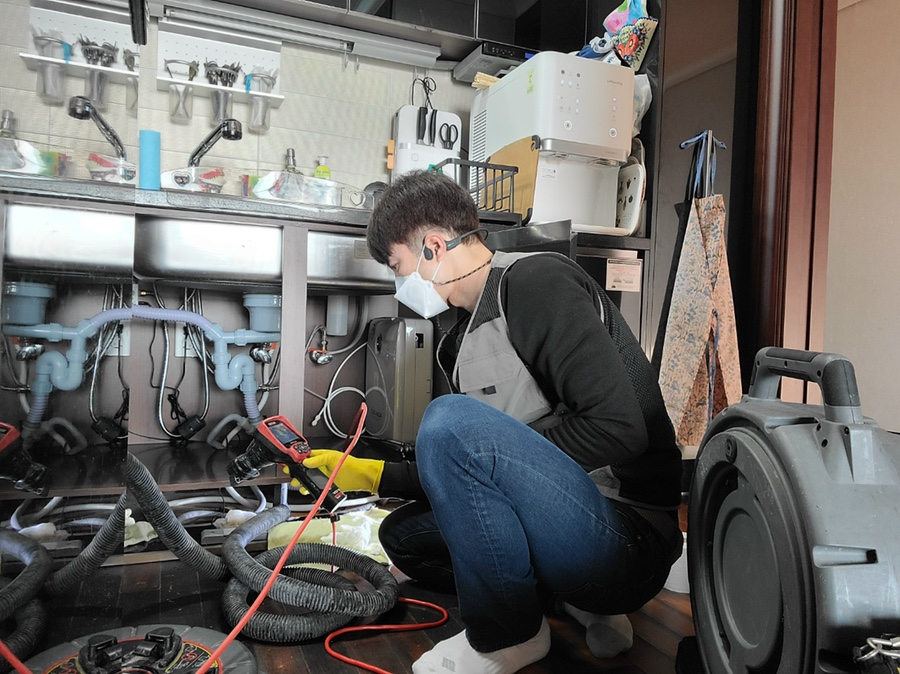
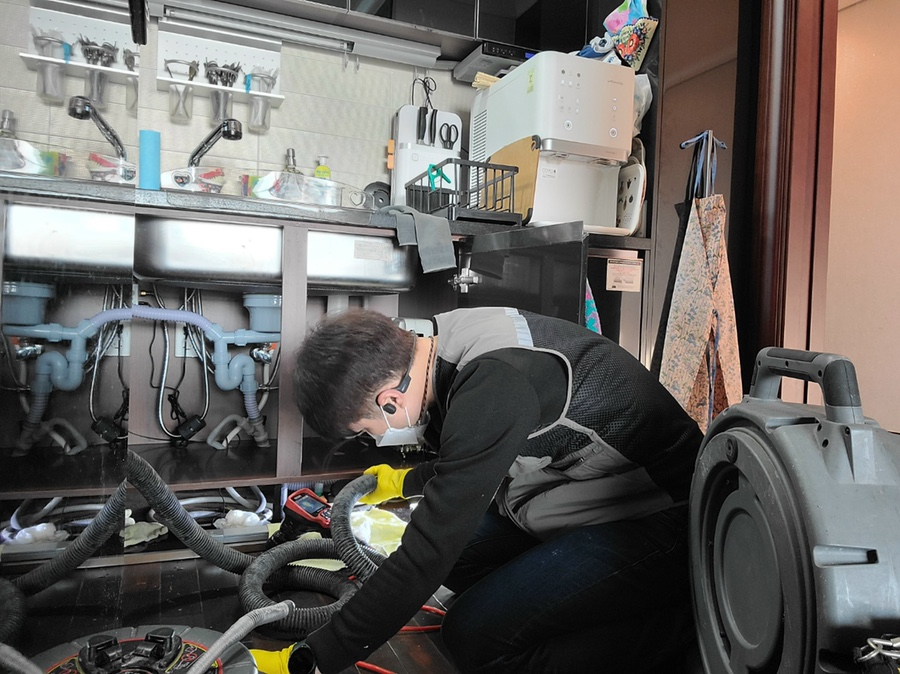
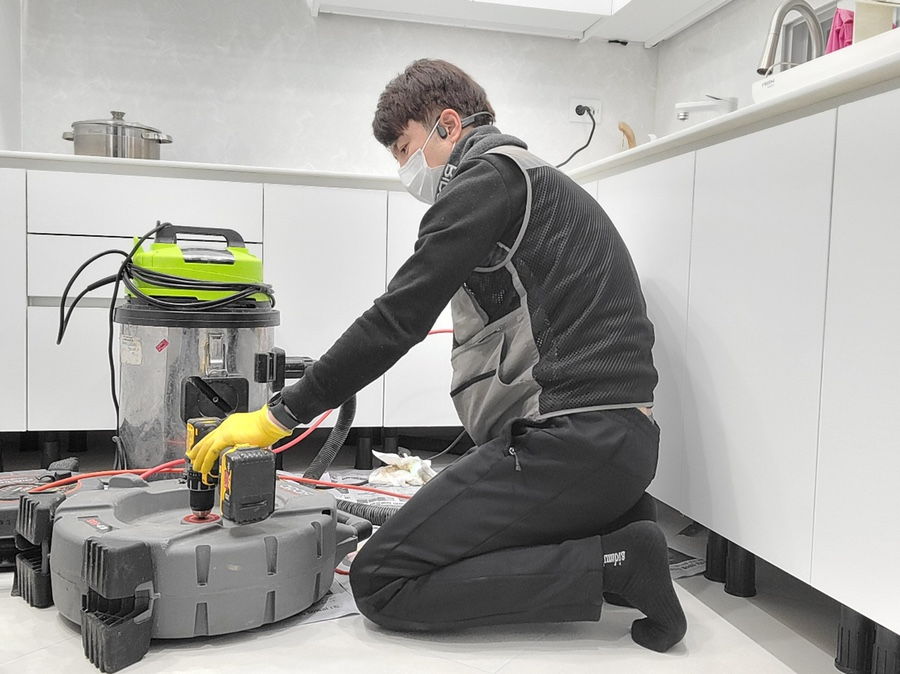
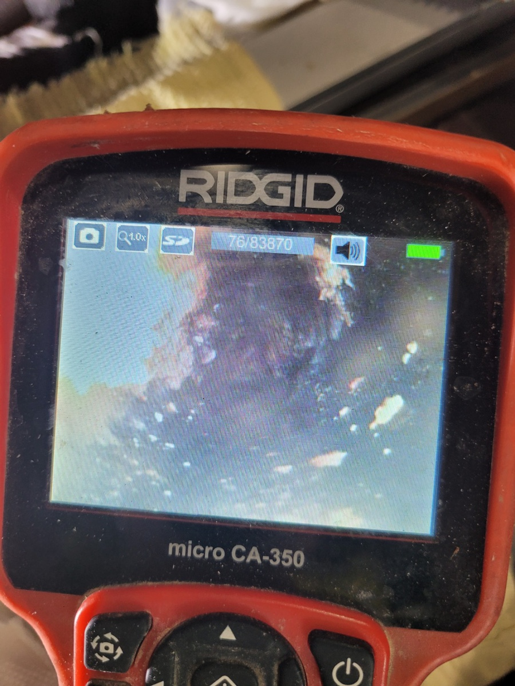
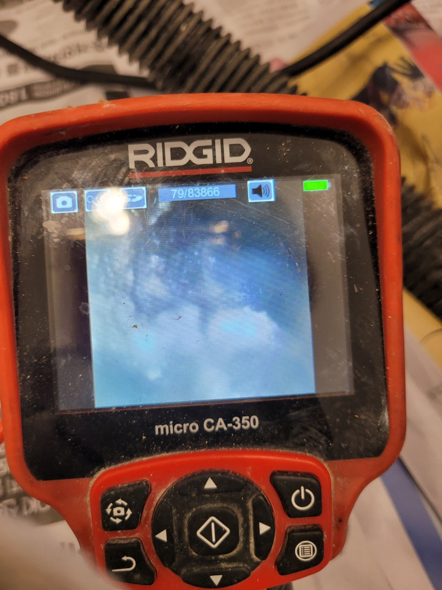
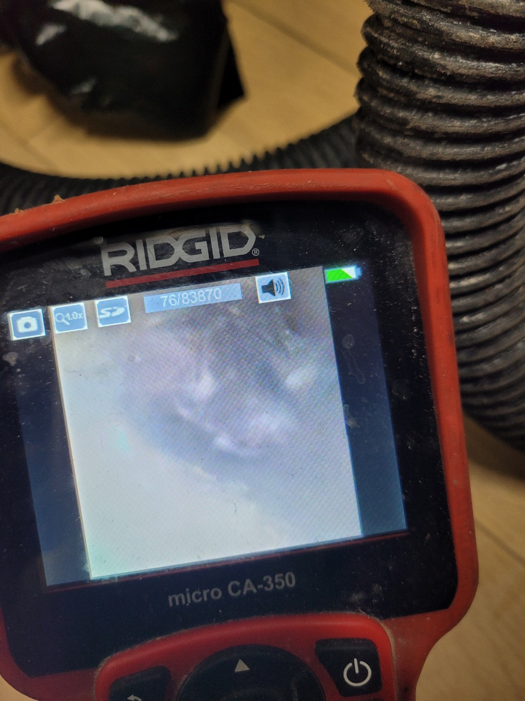
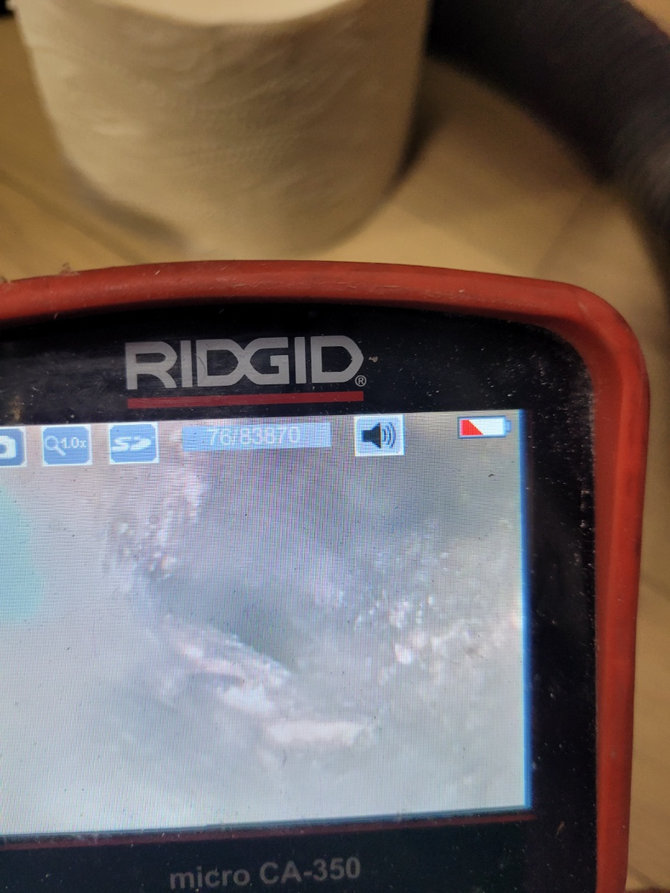

🏠 처인구싱크대막힘은 하수구막힘에서
화성 처인구 싱크대막힘 전문 시공 후기

📋 작업 개요
- 위치: 화성 처인구, 처인구, 화성
- 서비스 유형: 싱크대막힘, 하수구막힘, 배관막힘, 뚫는업체, 고압세척
- 작업 일시: 2022. 1. 28. 1:25
- 업체명: 하수구수사대 (010-5615-2118)
🔍 문제 상황
처인구싱크대막힘은 처인구하수구막힘에서
안녕하세요
"하수구 수사대" 입니다
싱크대는 요리할때나 설거지를 할때나 우리의
작은 일상생활에 매우 큰 영향을 주는 중요한
존재인데요 그런 싱크대가 막혔을때 정말 당황스러울
것이 분명합니다 많은 불편함이 생기게 되죠
여기서 알아두셔야 할 점이 하나 있습니다
하수구가 막혔을때 빠르게 사용을 하기 위해서
셀프 수리를 하는 경우들이 종종 있는데요
셀프 수리를 한다고 해서 완벽하게 뚫리진 않습니다
오히려 더 악화되거나 다시 막히게 될 수 있죠
그래서 항상 전문가에게 의뢰를 하는걸 추천드립니다
물론 단순히 막혀있는거라면 쉽게 뚫릴수도
있지만 , 며칠안가 다시 막히거나 몇시간을 뚫어도
뚫리지 않는 경우에는 아랫집에 큰 피해를 줄 수도

🔎 원인 분석
💡 전문가 진단: 정밀 진단 장비를 사용하여 슬러지의 고착 여부를 판명하고 타격/세척 작업을 실시했습니다.
있는 상황이기 때문에 반드시 전문가에게 의뢰를
하시는걸 강력 추천드리고 싶은데요
혹시라도 하수구가 갑자기 막혀 빠르게 해결해야
할때 갑자기 막힌 일에 당혹스러워서 어느 업체에
믿고 맡겨야 하는지 고민이 되실 수 있습니다
서울/경기/인천 (수도권전지역)전지역
출장이 가능하고 주말,공휴일도 출장이 가능한 곳이
언제 어느때나 연락하기 좋기때문에
이런 모든 점이 가능한
처인구싱크대막힘 전문 업체인 '하수구막힘'으로
연락 한통만 주신다면 언제 어디서나 방문하겠습니다
싱크대가 막혔을때 셀프 해결을 하려 하면
해볼수 있는 것이 약품이나 철물점에서 판매하는
손으로 돌리는 스프링 정도라고 할 수 있는데요
만약 50mm 배관안에 기름슬러지로 쌓여 있는
경우에는 큰 도움이 되지 않는다고 보시면 되는데요
혹시라도 싱크대위에 물이 고여있다면

🔧 작업 과정
바닥으로 쏟아질 우려가 있어 쉽게 건들긴 어렵습니다
그렇기때문에 많은 분들께서 처인구싱크대막힘 업체
'하수구막힘'으로 문의를 해주시죠
오래전부터 기름기가 배관에 있게 되면
싱크대호스 주변으로도 기름 슬러지가 많이
묻어있고 악취또한 고약한 것을 볼 수 있는데요
이럴때 처인구싱크대막힘 업체인 '하수구막힘'은
최첨단 장비들과 검증된 기술력을 통해
처인구싱크대막힘 업체인 '하수구막힘'의
내시경 카메라로 어디서 막혔는지 원인과 내부를
꼼꼼하게 확인한 뒤 작업을 진행하고 있습니다
그 후 막힘증상과 악취 두가지를 한번에 제거할수
있는 배관스케일링이라는 작업을 진행하는데요
저희 업체의 배관스케일링은 배관에 붙은
기름슬러지를 모두 제거하는 작업이라 보시면 됩니다
플렉스샤프트 앞에 있는 체인이 회전을하면서
기름슬러지를 모두 제거하는 원리로 오래되서 단단한
기름슬러지들을 모두 제거하고 있습니다
작업을 하는 와중에도 꼼꼼히 내시경 카메라로 확인을
하면서 실수 없이 진행하고 있기에 완벽하고
깨끗한 수리를 한다고 장담해드릴수 있겠습니다
이렇게 처인구싱크대막힘 업체인 '하수구막힘'은
최첨단 장비와 검증된 실력으로 막힌 싱크대를
안전하고 확실하게 세척해드리고 있습니다
뿐만 아니라, 당일 방문이 가능하기 때문에
빠른 수리를 원하시면 언제 어디서든 연락 바랍니다


✅ 작업 완료
만일 작업후 문제가 생겼을 땐 , 1년동안
AS가 가능하니 믿고 연락주시면 빠르게 해결하기
위해 달려가겠습니다 감사합니다
전화번호:010-2340-2118
경기도 화성시 효행로 1060 10층 1004-A246호
#하수구 #하수구막힘 #싱크대 #싱크대막힘
#처인구 #배관 #배관수리 #수리 #수리업체




⚠️ 주방 싱크대 배관 막힘 예방 수칙
- ✅ 기름기가 묻은 식기나 프라이팬은 설거지 전 키친타올로 반드시 기름때를 닦아내세요.
- ✅ 주기적으로 싱크대 개수대에 뜨거운 물을 가득 받아 한 번에 내려 배관 내부 기름을 씻어내세요.
- ✅ 배수구 거름망을 미세한 필터로 사용하시고 음식물 찌꺼기가 틈으로 새어 들지 않게 관리하세요.
- ✅ 베이킹소다와 식초를 뜨거운 물과 함께 일주일에 한 번씩 부어주면 배관 살균과 막힘 예방에 좋습니다.
💡 핵심 정리
- 확실한 장비 작업(내시경 점검 및 샤프트 스케일링)으로 원인을 뿌리 뽑습니다.
- 작업 후 1년 이내에 동일한 부위 재발 시 100% 무상 A/S 서비스를 보장합니다.
- 서울 · 경기 · 인천 전 지역에 24시간 언제든 긴급 출동할 수 있도록 항시 대기 중입니다.
❓ 자주 묻는 질문 (FAQ)
🚨 화성 처인구 싱크대막힘 문제로 고민이신가요?
정확한 원인 진단과 확실한 시공으로 재발 없는 해결을 약속드립니다.
24시간 긴급 출동 | 서울 · 경기 · 인천 전지역 | 1년 내 재발 시 무상 A/S